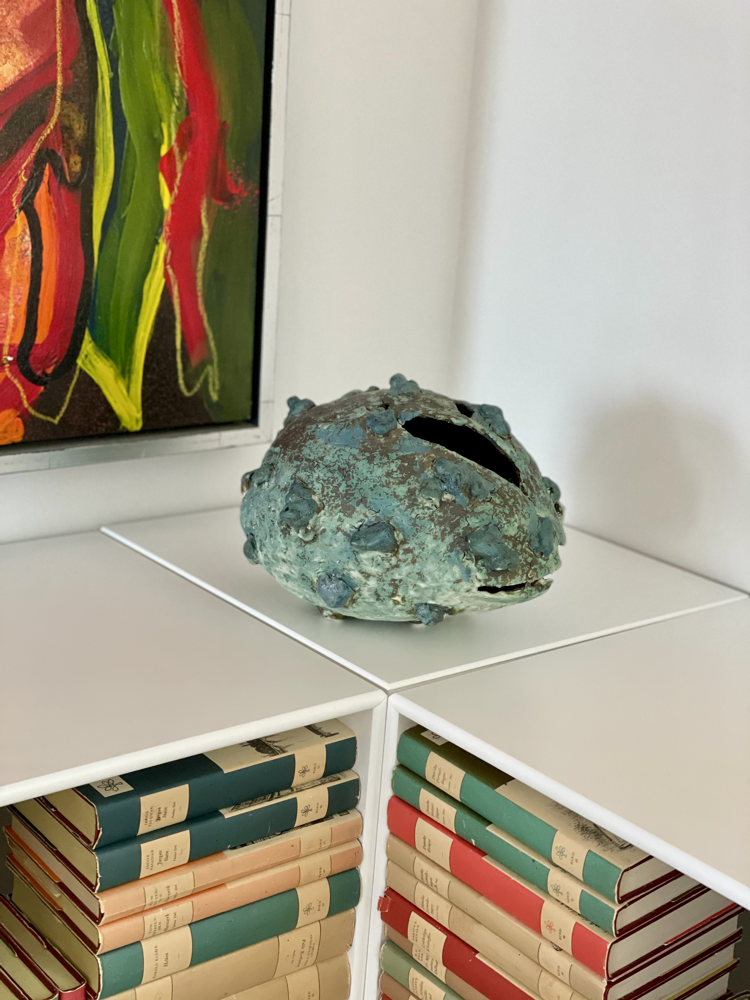

Brændingingstyper
Der findes mange forskellige brændingstyper indenfor keramik. Her
kan du læse mere om brænding i el ovn, Rakubrænding, Sodabrænding og
Muffelbrænding. De tre sidste brændingstyper er alle meget gamle.
Rakubrænding stammer fra Japan tilbage i det 1500 århundrede.